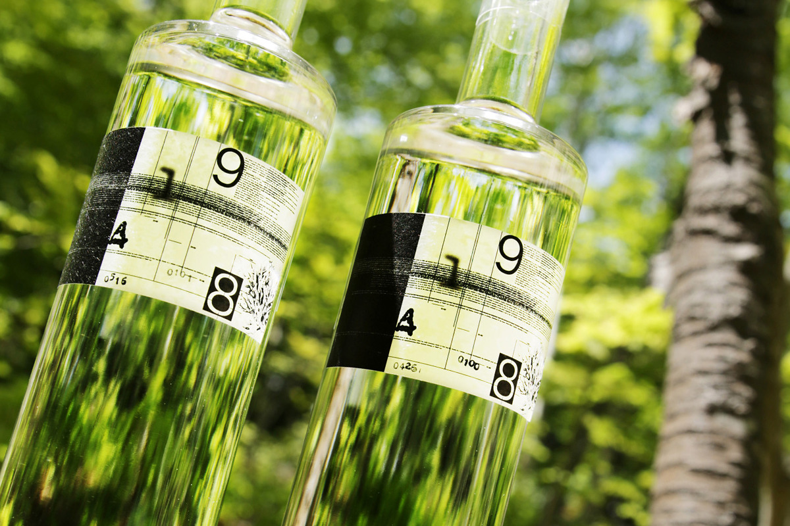
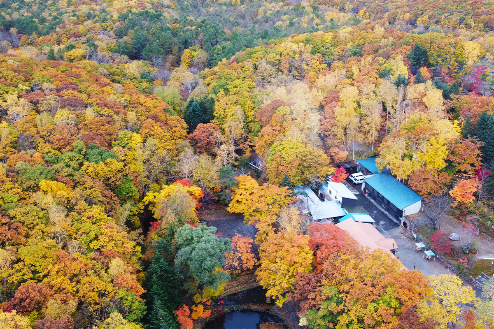
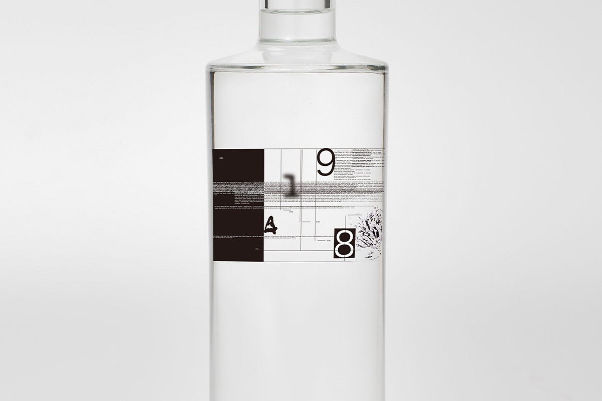
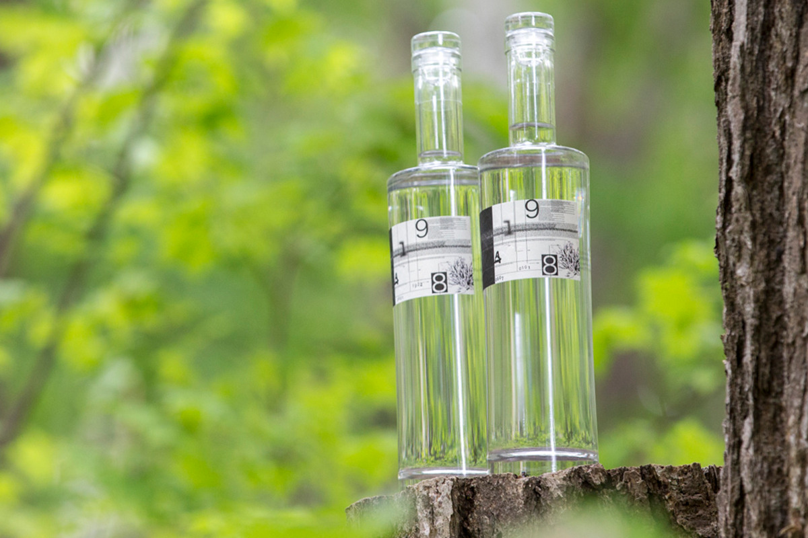
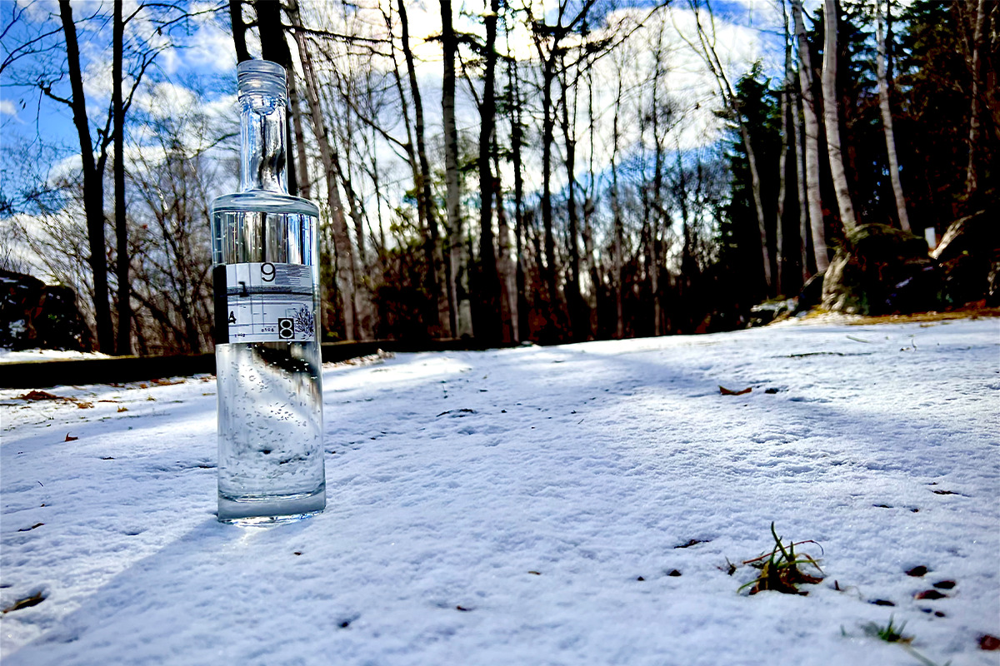
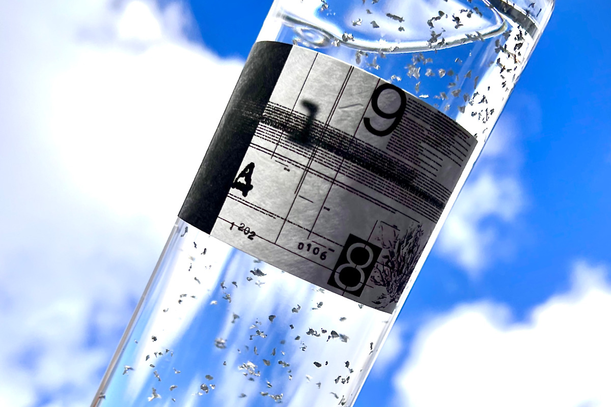
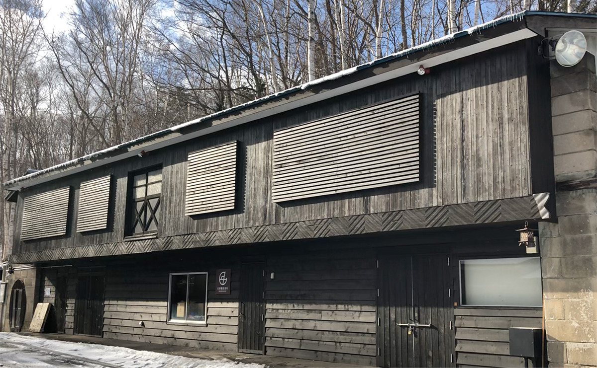

Префектура Хоккайдо · Саппоро · джин
Джин 9148 из парка «Бэнидзакура»: первая джиновая винокурня Хоккайдо в Саппоро

На юге Саппоро, в парке, куда весной приходят смотреть на сакуру, а в октябре на красные клёны, в 2018 году открылась первая на Хоккайдо винокурня джина. Её джин 9148 пахнет ламинарией, лавандой и сушёными грибами, а имя получил от знаменитой антиутопии XX века.
Винокурня
Джин из парка с сакурой и клёнами
Парк «Бэнидзакура» лежит в районе Минами, на южной окраине Саппоро. Весной, в майские праздники, здесь цветёт сакура, в октябре парк горит красными клёнами. Его разбили переселенцы, которые в эпоху Мэйдзи (1868–1912) приехали осваивать Хоккайдо из Канадзавы. В 2018 году в парке появилась Benizakura Distillery, первая винокурня джина на Хоккайдо.

Винокурню создала компания Hokkaido Liberty Whisky, и цель у неё простая: рассказать миру о Хоккайдо через вкус и запах. Джин перегоняют в 400-литровом кубе итальянской фирмы Barison, а разбавляют подземной водой из района Минами. Многие ботанические добавки собраны на Хоккайдо, в том числе растения самого парка.
Основа линейки, джин #0101, задуман как джин с умами: в нём есть ламинария из Хидаки, сушёный дайкон и шиитаке. Джин винокурни получил золото на нескольких международных конкурсах: на Cathay Pacific Hong Kong International Wine & Spirit Competition 2018, на Frankfurt International Trophy 2021 и на Tokyo Whisky & Spirits Competition.
Имя
Почему 9148
Название джина взято из романа Джорджа Оруэлла «1984». Джордж Оруэлл (1903–1950) был английским писателем, и его книгу о тоталитарном государстве, где за каждым следят, читают по всему миру как одну из главных антиутопий. Если разбить «1984» на «19» и «84» и перевернуть каждую пару, получится 9148.

Выбор не случаен. В романе дешёвый и скверный джин служит символом несвободного общества, а герои пьют его и вспоминают времена, когда были свободны. Hokkaido Liberty Whisky строит свою марку на идее «свободного мира, свободной мысли и свободных ценностей» и вкладывает её в имя 9148. Создатели хотят, чтобы этот джин пили, думая о мире, где люди свободны и могут спокойно выпить вместе.
Этикетку придумал художник из Саппоро, родившийся на Хоккайдо в 1960 году, и в её дизайне читается мир романа. На каждой этикетке выбиты два четырёхзначных числа: слева дата перегонки, справа номер рецепта. Джин делают небольшими партиями, и аромат меняется от сезона к сезону и от рецепта к рецепту. Бутылку и крышку тоже задумывали как предмет искусства: пустую можно поставить на полку вместо украшения.
Линейка
Три джина серии 9148
#0101. Постоянный джин винокурни, тот самый, что брал золото на международных конкурсах. Вместе с можжевельником, кориандром, дягилем и корицей в нём ламинария из Хидаки, черника, сушёный дайкон, лаванда и сушёные шиитаке с Хоккайдо, а ещё лимон, кардамон, гвоздика, розовый и чёрный перец. Бутылка 700 мл, 45 градусов, в 2022 году она стоила 4 950 иен с налогом.

#0303 TRIPLE. Тот же набор растений, что и в #0101, но их больше чем втрое. Это джин крепости «нэви», 57 градусов, с ярким и мощным ароматом, к которому быстро привыкаешь. Бутылка 700 мл стоила 7 480 иен с налогом в 2022 году.
#0106 POWDER SNOW. Зимний джин, который начали выпускать в 2021 году. Кроме можжевельника в нём молоко, какао-бобы и клубника с Хоккайдо, кукуруза, апельсин, кофе, корица и трюфель. У джина мягкий молочный аромат, а в бутылке кружатся блёстки серебра, как снег. Зимой 2021–2022 года его продавали с 22 декабря до конца февраля, бутылка 700 мл крепостью 50 градусов стоила 5 500 иен с налогом.


Как пить
Чтобы почувствовать аромат
Джин серии 9148 пьют чистым из большого бокала для бренди, чтобы раскрылся аромат, или со льдом. Если хочется длинного напитка, винокурня советует разбавлять его не тоником, а содовой: так лучше слышны растения. А зимой его пьют с горячей водой, и он согревает и тело, и душу.
Купить джин можно в кафе парка «Бэнидзакура», напротив винокурни, и в интернет-магазине компании.

Benizakura Distillery, кафе в парке «Бэнидзакура»
- Адрес
- префектура Хоккайдо, Саппоро, район Минами, Сумикава, 389-6
- Часы работы
- 10:00–16:00 (с декабря по март кафе может закрываться на зиму)
- Выходные
- понедельник
- Сайт
- hlwhisky.co.jp